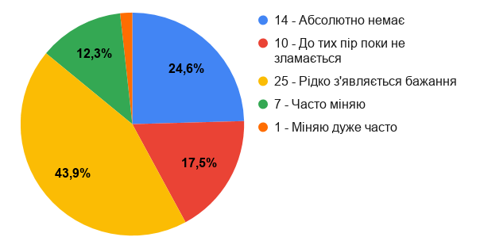

Ми провели опитування в Івано-франківську та області.
Ось результати опитувань:
Питання №1:"Чи присутнє у вас бажання постійно оновлювати ваш телефон чи комп’ютер?"
Питання №2:"На вашу думку чи залежні ви від телефона, комп’ютера, планшета і т.д?"
.png)
Питання №3:"Скільки часу ви проводите час за комп’ютером?"
.png)
Питання №4:"Чи була у вас нестача сну через велику кількість часу проведену в інтернеті?"
.png)
Питання №5:"Як часто ви відчуваєте агресію після тривалої відсутності гаджетів та Інтернету?"
.png)
Питання №6:"Чи втрачали сприйняття часу під час перебування в інтернеті?"
.png)
Питання №7:Чи бували у Вас невдалі спроби обмежити час в гаджетах?"
.png)
Питання №8:"Як часто ви приховували від рідних ваш час проведений в інтернеті?"
.png)
Питання №9:"Чи відчуваєте ви обурення коли вам обмежують доступ до інтернету?"
.png)
Питання №10:"Як за часто ви робите перехід між сторінками в інтернеті, не досягаючи вашої мети?"
.png)
Питання №11:"Чи помічали ви за собою, те, що під час розмови ви час від часу відволікаєтесь на ваш телефон?"
.png)
Питання №12:"Чи користуєтесь ви гаджетами під час зустрічі з кимось?"
.png)
Питання №13:"Чи була у вас спроба обмежити себе від проведення в інтернеті?"
.png)
Питання №14:"Як часто в інтернеті ви зустрічаєте не оптимізовані, не зручні сайти для користування, від чого пропадає бажання перебувати на них?"
.png)